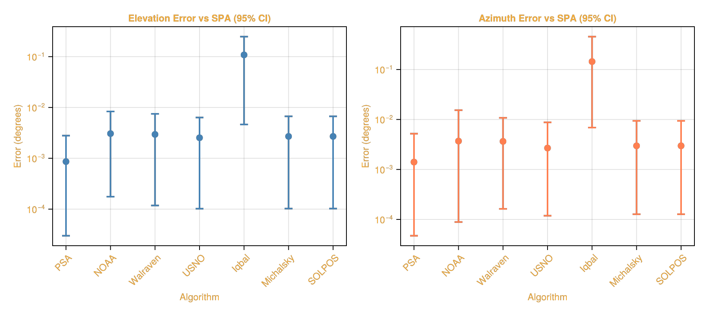
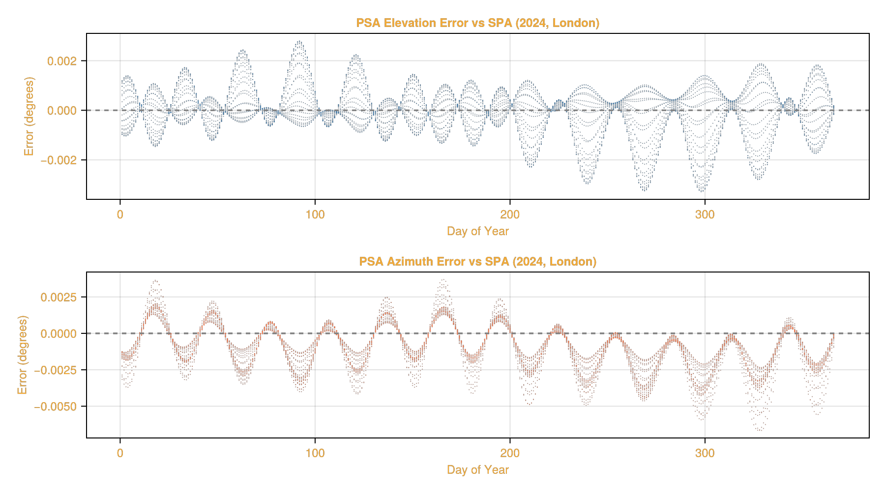
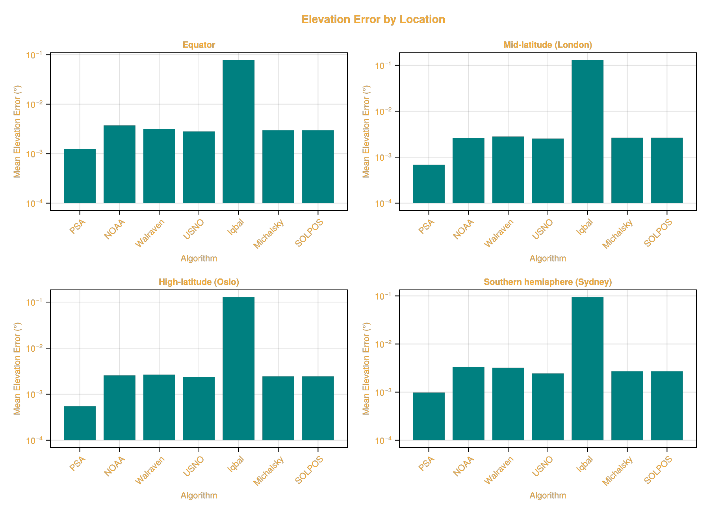
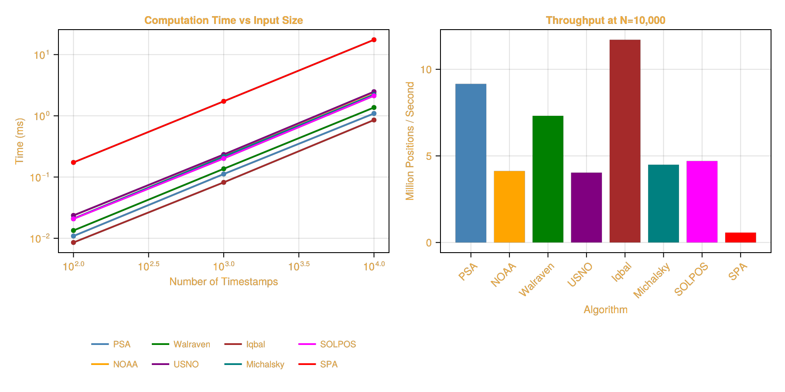
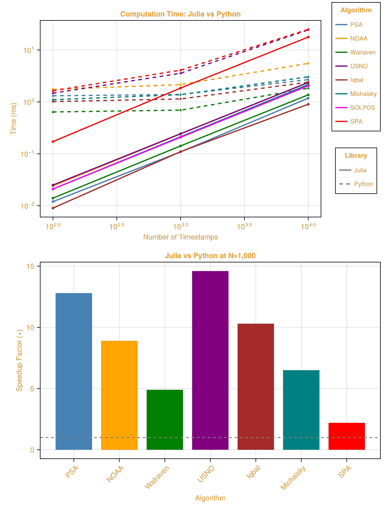
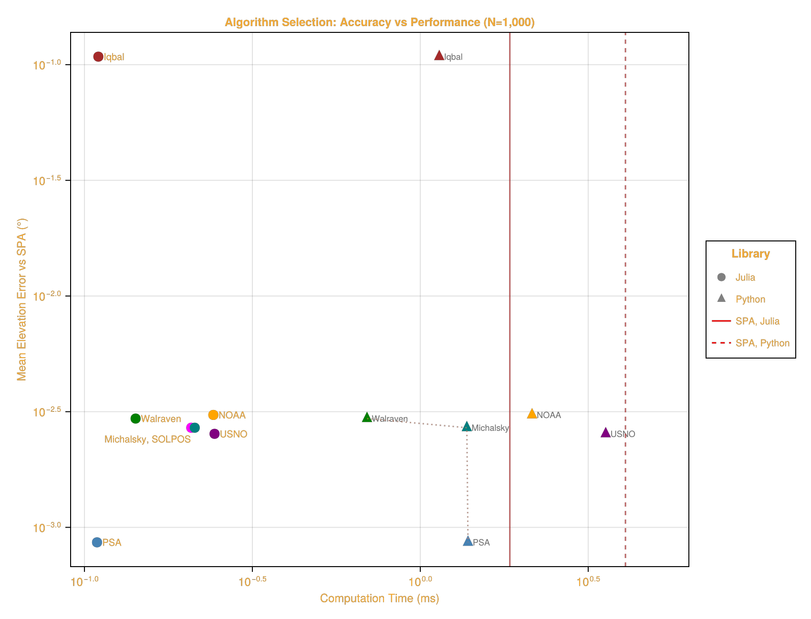

Benchmarking
This page provides comprehensive benchmarks of the solar position algorithms available in SolarPosition.jl, comparing their computational performance and accuracy. The SPA algorithm is used as the reference "gold standard" due to its high precision (±0.0003°).
using SolarPositionusing CairoMakieusing Datesusing DataFramesusing Statisticsusing BenchmarkToolsFor available solar position algorithms, see the Positioning Guide.
Accuracy Analysis
To evaluate accuracy, we compare each algorithm against the gold standard SPA across a full year of hourly timestamps at various geographic locations. Hours with the sun more than 9° below the horizon are left out, because SOLPOS caps its elevation at -9° and its error there says nothing about its accuracy. Excluding them changes the other algorithms' errors by less than 2%.
# Test locations representing different latitudeslocations = [ (name = "Equator", obs = Observer(0.0, 0.0, 0.0)), (name = "Mid-latitude (London)", obs = Observer(51.5074, -0.1278, 11.0)), (name = "High-latitude (Oslo)", obs = Observer(59.9139, 10.7522, 23.0)), (name = "Southern hemisphere (Sydney)", obs = Observer(-33.8688, 151.2093, 58.0)),]# Generate hourly timestamps for a full yeartimes = collect(DateTime(2024, 1, 1):Hour(1):DateTime(2024, 12, 31, 23))8784-element Vector{Dates.DateTime}:
2024-01-01T00:00:00
2024-01-01T01:00:00
2024-01-01T02:00:00
2024-01-01T03:00:00
2024-01-01T04:00:00
2024-01-01T05:00:00
2024-01-01T06:00:00
2024-01-01T07:00:00
2024-01-01T08:00:00
2024-01-01T09:00:00
⋮
2024-12-31T15:00:00
2024-12-31T16:00:00
2024-12-31T17:00:00
2024-12-31T18:00:00
2024-12-31T19:00:00
2024-12-31T20:00:00
2024-12-31T21:00:00
2024-12-31T22:00:00
2024-12-31T23:00:00Accuracy comparison
using Statistics: quantile"""Compare algorithm accuracy against SPA reference.Returns DataFrame with error statistics including percentiles."""function compare_accuracy(obs::Observer, times::Vector{DateTime}, algo) # Get SPA reference positions spa_pos = solar_position(obs, times, SPA()) # Get algorithm positions algo_pos = solar_position(obs, times, algo) # Calculate errors where the sun is at most 9° below the horizon keep = spa_pos.elevation .> -9 elev_errors = abs.(algo_pos.elevation[keep] .- spa_pos.elevation[keep]) azim_errors = abs.(algo_pos.azimuth[keep] .- spa_pos.azimuth[keep]) # Handle azimuth wraparound (0° and 360° are the same) azim_errors = min.(azim_errors, 360.0 .- azim_errors) return ( elevation_mean = mean(elev_errors), elevation_p2_5 = quantile(elev_errors, 0.025), elevation_p97_5 = quantile(elev_errors, 0.975), elevation_max = maximum(elev_errors), azimuth_mean = mean(azim_errors), azimuth_p2_5 = quantile(azim_errors, 0.025), azimuth_p97_5 = quantile(azim_errors, 0.975), azimuth_max = maximum(azim_errors), n_samples = count(keep), )endData collection
# Algorithms to compare (excluding SPA which is the reference)algorithms = [ ("PSA", PSA()), ("NOAA", NOAA()), ("Walraven", Walraven()), ("USNO", USNO()), ("Iqbal", Iqbal()), ("Michalsky", Michalsky()), ("SOLPOS", SOLPOS()),]# All algorithms including SPA, with one colour each for every plot on this pageall_algorithms = [algorithms; [("SPA", SPA())]]algo_names = first.(all_algorithms)algo_colors = Dict(zip(algo_names, [:steelblue, :orange, :green, :purple, :brown, :teal, :magenta, :red]))# Collect accuracy dataaccuracy_results = DataFrame( Algorithm = String[], Location = String[], Elevation_Mean_Error = Float64[], Elevation_P2_5 = Float64[], Elevation_P97_5 = Float64[], Elevation_Max_Error = Float64[], Azimuth_Mean_Error = Float64[], Azimuth_P2_5 = Float64[], Azimuth_P97_5 = Float64[], Azimuth_Max_Error = Float64[],)for (algo_name, algo) in algorithms for loc in locations stats = compare_accuracy(loc.obs, times, algo) push!(accuracy_results, ( Algorithm = algo_name, Location = loc.name, Elevation_Mean_Error = stats.elevation_mean, Elevation_P2_5 = stats.elevation_p2_5, Elevation_P97_5 = stats.elevation_p97_5, Elevation_Max_Error = stats.elevation_max, Azimuth_Mean_Error = stats.azimuth_mean, Azimuth_P2_5 = stats.azimuth_p2_5, Azimuth_P97_5 = stats.azimuth_p97_5, Azimuth_Max_Error = stats.azimuth_max, )) endendaccuracy_results| Row | Algorithm | Location | Elevation_Mean_Error | Elevation_P2_5 | Elevation_P97_5 | Elevation_Max_Error | Azimuth_Mean_Error | Azimuth_P2_5 | Azimuth_P97_5 | Azimuth_Max_Error |
|---|---|---|---|---|---|---|---|---|---|---|
| String | String | Float64 | Float64 | Float64 | Float64 | Float64 | Float64 | Float64 | Float64 | |
| 1 | PSA | Equator | 0.00123156 | 5.07459e-5 | 0.00334735 | 0.00385657 | 0.00148772 | 2.2388e-5 | 0.00786291 | 0.0681224 |
| 2 | PSA | Mid-latitude (London) | 0.000682896 | 1.88496e-5 | 0.00250998 | 0.00326165 | 0.00136435 | 6.49477e-5 | 0.00378466 | 0.00493341 |
| 3 | PSA | High-latitude (Oslo) | 0.000549332 | 1.89342e-5 | 0.00221651 | 0.00295755 | 0.00135591 | 6.4568e-5 | 0.00354113 | 0.00427395 |
| 4 | PSA | Southern hemisphere (Sydney) | 0.000981611 | 3.1145e-5 | 0.00309704 | 0.00378129 | 0.00141624 | 3.66037e-5 | 0.00561127 | 0.0142763 |
| 5 | NOAA | Equator | 0.00373026 | 0.000118465 | 0.0110134 | 0.0128709 | 0.00381087 | 4.62651e-5 | 0.0235938 | 0.157497 |
| 6 | NOAA | Mid-latitude (London) | 0.00263697 | 0.000156466 | 0.00674715 | 0.00958528 | 0.00347337 | 0.000102946 | 0.0098423 | 0.0133218 |
| 7 | NOAA | High-latitude (Oslo) | 0.00255574 | 0.00026471 | 0.00582039 | 0.00837328 | 0.00335563 | 0.000106357 | 0.00969001 | 0.0121104 |
| 8 | NOAA | Southern hemisphere (Sydney) | 0.00332232 | 0.000162967 | 0.00978882 | 0.012174 | 0.00415593 | 9.9331e-5 | 0.0182986 | 0.0392282 |
| 9 | Walraven | Equator | 0.00313071 | 0.000138627 | 0.00714446 | 0.00835027 | 0.00516467 | 0.00021512 | 0.0178036 | 0.133141 |
| 10 | Walraven | Mid-latitude (London) | 0.00282143 | 7.75699e-5 | 0.00783139 | 0.00908632 | 0.00297192 | 0.000131148 | 0.00695451 | 0.00910657 |
| 11 | Walraven | High-latitude (Oslo) | 0.00265398 | 7.18283e-5 | 0.00766917 | 0.00896712 | 0.00283583 | 0.000144046 | 0.00622712 | 0.00749194 |
| 12 | Walraven | Southern hemisphere (Sydney) | 0.00320418 | 0.00018325 | 0.00730513 | 0.00809606 | 0.00360774 | 0.000160355 | 0.0121861 | 0.0299528 |
| 13 | USNO | Equator | 0.00281954 | 0.000160209 | 0.00686724 | 0.00853729 | 0.00339331 | 0.000149432 | 0.0128815 | 0.0710604 |
| 14 | USNO | Mid-latitude (London) | 0.00254839 | 7.62004e-5 | 0.00659389 | 0.00795245 | 0.00235393 | 9.21273e-5 | 0.00671584 | 0.00976729 |
| 15 | USNO | High-latitude (Oslo) | 0.00233657 | 6.00378e-5 | 0.00627704 | 0.00760349 | 0.00224786 | 0.000104686 | 0.00622965 | 0.00820491 |
| 16 | USNO | Southern hemisphere (Sydney) | 0.00244123 | 0.00011118 | 0.00563798 | 0.00705436 | 0.00273269 | 0.000128043 | 0.00923345 | 0.0175367 |
| 17 | Iqbal | Equator | 0.0785817 | 0.0034742 | 0.190981 | 0.260325 | 0.256181 | 0.0111917 | 0.859416 | 7.40822 |
| 18 | Iqbal | Mid-latitude (London) | 0.130985 | 0.00533356 | 0.261347 | 0.321229 | 0.100597 | 0.005212 | 0.279589 | 0.339794 |
| 19 | Iqbal | High-latitude (Oslo) | 0.128827 | 0.00502865 | 0.275188 | 0.330903 | 0.0839903 | 0.00453555 | 0.240908 | 0.304279 |
| 20 | Iqbal | Southern hemisphere (Sydney) | 0.0947157 | 0.00467975 | 0.262453 | 0.343625 | 0.136082 | 0.00660972 | 0.43965 | 0.672035 |
| 21 | Michalsky | Equator | 0.00297441 | 0.000150904 | 0.00695362 | 0.00853822 | 0.00388309 | 0.000165948 | 0.0140189 | 0.0688998 |
| 22 | Michalsky | Mid-latitude (London) | 0.00264921 | 7.83981e-5 | 0.00713649 | 0.00850525 | 0.00255128 | 0.000110064 | 0.00691135 | 0.00984263 |
| 23 | Michalsky | High-latitude (Oslo) | 0.00244371 | 5.53248e-5 | 0.00683201 | 0.00819145 | 0.00241563 | 0.000101364 | 0.00640085 | 0.00828136 |
| 24 | Michalsky | Southern hemisphere (Sydney) | 0.00271372 | 0.000124979 | 0.00585896 | 0.00704761 | 0.0030371 | 0.000131057 | 0.0102237 | 0.0229376 |
| 25 | SOLPOS | Equator | 0.00297441 | 0.000150904 | 0.00695362 | 0.00853822 | 0.00388309 | 0.000165948 | 0.0140189 | 0.0688998 |
| 26 | SOLPOS | Mid-latitude (London) | 0.00264921 | 7.83981e-5 | 0.00713649 | 0.00850525 | 0.00255128 | 0.000110064 | 0.00691135 | 0.00984263 |
| 27 | SOLPOS | High-latitude (Oslo) | 0.00244371 | 5.53248e-5 | 0.00683201 | 0.00819145 | 0.00241563 | 0.000101364 | 0.00640085 | 0.00828136 |
| 28 | SOLPOS | Southern hemisphere (Sydney) | 0.00271372 | 0.000124979 | 0.00585896 | 0.00704761 | 0.0030371 | 0.000131057 | 0.0102237 | 0.0229376 |
The following plots show the mean error with 95% confidence intervals (2.5th to 97.5th percentile) for each algorithm compared to SPA.
Visualization
# Aggregate results by algorithm (mean across all locations)algo_stats = combine( groupby(accuracy_results, :Algorithm), :Elevation_Mean_Error => mean => :Elev_Mean, :Elevation_P2_5 => mean => :Elev_P2_5, :Elevation_P97_5 => mean => :Elev_P97_5, :Azimuth_Mean_Error => mean => :Azim_Mean, :Azimuth_P2_5 => mean => :Azim_P2_5, :Azimuth_P97_5 => mean => :Azim_P97_5,)# Sort by algorithm orderalgo_order = first.(algorithms)algo_stats = algo_stats[sortperm([findfirst(==(algo), algo_order) for algo in algo_stats.Algorithm]), :]xs = 1:nrow(algo_stats)# the log scale needs a positive lower whiskeralgo_stats.Elev_P2_5 = max.(algo_stats.Elev_P2_5, 1e-7)algo_stats.Azim_P2_5 = max.(algo_stats.Azim_P2_5, 1e-7)fig = Figure(size = (900, 400), backgroundcolor = :transparent, fontsize = 12, textcolor = "#f5ab35")# Elevation error plot with error barsax1 = Axis(fig[1, 1], title = "Elevation Error vs SPA (95% CI)", xlabel = "Algorithm", ylabel = "Error (degrees)", xticks = (xs, algo_stats.Algorithm), xticklabelrotation = π / 4, yscale = log10, backgroundcolor = :transparent,)# Error bars showing 95% intervalerrorbars!(ax1, xs, algo_stats.Elev_Mean, algo_stats.Elev_Mean .- algo_stats.Elev_P2_5, algo_stats.Elev_P97_5 .- algo_stats.Elev_Mean, color = :steelblue, linewidth = 2, whiskerwidth = 10)scatter!(ax1, xs, algo_stats.Elev_Mean, color = :steelblue, markersize = 12)# Azimuth error plot with error barsax2 = Axis(fig[1, 2], title = "Azimuth Error vs SPA (95% CI)", xlabel = "Algorithm", ylabel = "Error (degrees)", xticks = (xs, algo_stats.Algorithm), xticklabelrotation = π / 4, yscale = log10, backgroundcolor = :transparent,)errorbars!(ax2, xs, algo_stats.Azim_Mean, algo_stats.Azim_Mean .- algo_stats.Azim_P2_5, algo_stats.Azim_P97_5 .- algo_stats.Azim_Mean, color = :coral, linewidth = 2, whiskerwidth = 10)scatter!(ax2, xs, algo_stats.Azim_Mean, color = :coral, markersize = 12)
PSA Error Over Time
To better understand how errors vary throughout the year, we compare the PSA algorithm against SPA at hourly resolution for a full year at a single location.
# Generate hourly timestamps for a full year (reduces memory usage vs minute resolution)hourly_times = collect(DateTime(2024, 1, 1):Hour(1):DateTime(2024, 12, 31, 23))obs_london = Observer(51.5074, -0.1278, 11.0)# Calculate positionsspa_positions = solar_position(obs_london, hourly_times, SPA())psa_positions = solar_position(obs_london, hourly_times, PSA())# Calculate errorselev_errors = psa_positions.elevation .- spa_positions.elevationazim_errors = psa_positions.azimuth .- spa_positions.azimuth# Handle azimuth wraparoundazim_errors = [abs(e) > 180 ? e - sign(e) * 360 : e for e in azim_errors]println("PSA vs SPA at hourly resolution ($(length(hourly_times)) samples):")println(" Elevation: mean=$(round(mean(abs.(elev_errors)), digits=6))°, max=$(round(maximum(abs.(elev_errors)), digits=4))°")println(" Azimuth: mean=$(round(mean(abs.(azim_errors)), digits=6))°, max=$(round(maximum(abs.(azim_errors)), digits=4))°")PSA vs SPA at hourly resolution (8784 samples):
Elevation: mean=0.000689°, max=0.0033°
Azimuth: mean=0.001451°, max=0.0067°Visualization
fig_err = Figure(size = (900, 500), backgroundcolor = :transparent, fontsize = 12, textcolor = "#f5ab35")# Convert to day of year for x-axisday_of_year = [Dates.dayofyear(t) for t in hourly_times]ax1 = Axis(fig_err[1, 1], title = "PSA Elevation Error vs SPA (2024, London)", xlabel = "Day of Year", ylabel = "Error (degrees)", backgroundcolor = :transparent,)scatter!(ax1, day_of_year, elev_errors, markersize = 1.5, color = (:steelblue, 0.5))hlines!(ax1, [0.0], color = :gray, linestyle = :dash)ax2 = Axis(fig_err[2, 1], title = "PSA Azimuth Error vs SPA (2024, London)", xlabel = "Day of Year", ylabel = "Error (degrees)", backgroundcolor = :transparent,)scatter!(ax2, day_of_year, azim_errors, markersize = 1.5, color = (:coral, 0.5))hlines!(ax2, [0.0], color = :gray, linestyle = :dash)
Error Distribution by Location
Visualization
fig2 = Figure(size = (900, 650), backgroundcolor = :transparent, fontsize = 11, textcolor = "#f5ab35")for (i, loc) in enumerate(locations) row = (i - 1) ÷ 2 + 1 col = (i - 1) % 2 + 1 ax = Axis(fig2[row, col], title = loc.name, xlabel = "Algorithm", ylabel = "Mean Elevation Error (°)", xticks = (1:length(algorithms), first.(algorithms)), xticklabelrotation = π / 4, yscale = log10, backgroundcolor = :transparent, ) loc_data = filter(r -> r.Location == loc.name, accuracy_results) barplot!(ax, 1:length(algorithms), loc_data.Elevation_Mean_Error, color = :teal, fillto = 1e-4)endLabel(fig2[0, :], "Elevation Error by Location", fontsize = 14, font = :bold)
As we can see the error distribution is relatively consistent across different geographic locations, with PSA consistently providing the lowest mean error compared to SPA.
Performance Benchmarks
We benchmark the computational performance of each algorithm across different input sizes, from single timestamp calculations to bulk operations with 10,000 timestamps.
Single benchmark
# Single position benchmarksobs = Observer(51.5074, -0.1278, 11.0) # Londondt = DateTime(2024, 6, 21, 12, 0, 0)single_benchmarks = DataFrame( Algorithm = String[], Time_ns = Float64[], Allocations = Int[],)for (name, algo) in all_algorithms b = @benchmark solar_position($obs, $dt, $algo) samples=100 evals=10 push!(single_benchmarks, ( Algorithm = name, Time_ns = median(b.times), Allocations = b.allocs, ))end# Add relative timingsingle_benchmarks.Time_μs = single_benchmarks.Time_ns ./ 1000spa_time = filter(row -> row.Algorithm == "SPA", single_benchmarks).Time_ns[1]single_benchmarks.Relative_to_SPA = single_benchmarks.Time_ns ./ spa_timesingle_benchmarks[:, [:Algorithm, :Time_μs, :Allocations, :Relative_to_SPA]]| Row | Algorithm | Time_μs | Allocations | Relative_to_SPA |
|---|---|---|---|---|
| String | Float64 | Int64 | Float64 | |
| 1 | PSA | 0.1011 | 0 | 0.063231 |
| 2 | NOAA | 0.2294 | 0 | 0.143474 |
| 3 | Walraven | 0.1322 | 0 | 0.0826818 |
| 4 | USNO | 0.2083 | 0 | 0.130277 |
| 5 | Iqbal | 0.0822 | 0 | 0.0514103 |
| 6 | Michalsky | 0.1903 | 0 | 0.119019 |
| 7 | SOLPOS | 0.1943 | 0 | 0.121521 |
| 8 | SPA | 1.5989 | 0 | 1.0 |
Vector benchmark
# Vector benchmarks for different sizessizes = [100, 1_000, 10_000]vector_benchmarks = DataFrame( Algorithm = String[], N = Int[], Time_ms = Float64[], Throughput = Float64[], # positions per second)for n in sizes times_vec = collect(DateTime(2024, 1, 1):Hour(1):(DateTime(2024, 1, 1) + Hour(n-1))) for (name, algo) in all_algorithms b = @benchmark solar_position($obs, $times_vec, $algo) samples=10 evals=1 time_ms = median(b.times) / 1e6 push!(vector_benchmarks, ( Algorithm = name, N = n, Time_ms = time_ms, Throughput = n / (time_ms / 1000), )) endend# Pivot for displayvector_pivot = unstack(vector_benchmarks, :Algorithm, :N, :Time_ms)vector_pivot| Row | Algorithm | 100 | 1000 | 10000 |
|---|---|---|---|---|
| String | Float64? | Float64? | Float64? | |
| 1 | PSA | 0.0108765 | 0.111988 | 1.09201 |
| 2 | NOAA | 0.023545 | 0.231608 | 2.42399 |
| 3 | Walraven | 0.0134 | 0.13641 | 1.36699 |
| 4 | USNO | 0.0236205 | 0.233651 | 2.47943 |
| 5 | Iqbal | 0.008538 | 0.081898 | 0.854194 |
| 6 | Michalsky | 0.020962 | 0.215985 | 2.22591 |
| 7 | SOLPOS | 0.020756 | 0.201308 | 2.12602 |
| 8 | SPA | 0.173245 | 1.72617 | 17.4647 |
Visualization
fig3 = Figure(size = (900, 450), backgroundcolor = :transparent, fontsize = 12, textcolor = "#f5ab35")# Scaling plot (log-log)ax1 = Axis(fig3[1, 1], title = "Computation Time vs Input Size", xlabel = "Number of Timestamps", ylabel = "Time (ms)", xscale = log10, yscale = log10, backgroundcolor = :transparent,)for algo in algo_names data = filter(r -> r.Algorithm == algo, vector_benchmarks) lines!(ax1, data.N, data.Time_ms, label = algo, color = algo_colors[algo], linewidth = 2) scatter!(ax1, data.N, data.Time_ms, color = algo_colors[algo], markersize = 8)endLegend(fig3[2, 1], ax1, orientation = :horizontal, nbanks = 2, framevisible = false, labelsize = 10)# Throughput plotax2 = Axis(fig3[1, 2], title = "Throughput at N=10,000", xlabel = "Algorithm", ylabel = "Positions per Second", xticks = (1:length(algo_names), algo_names), xticklabelrotation = π / 4, backgroundcolor = :transparent,)throughput_10k = filter(r -> r.N == 10_000, vector_benchmarks)barplot!(ax2, 1:length(algo_names), throughput_10k.Throughput ./ 1e6, color = [algo_colors[a] for a in throughput_10k.Algorithm])ax2.ylabel = "Million Positions / Second"
Comparison with solposx (Python)
The solposx package is a Python library that implements the same solar position algorithms. This section compares the performance of SolarPosition.jl against solposx to demonstrate the benefits of using Julia. solposx has no SOLPOS implementation, so SOLPOS appears for Julia only.
The benchmarks below use PythonCall.jl to call solposx from within Julia. We have also benchmarked solposx directly in a pure Python environment (without PythonCall.jl overhead) and found no significant difference in the results.
Setup
First, we install and import solposx using PythonCall.jl and CondaPkg.jl:
using CondaPkgCondaPkg.add_pip("solposx")CondaPkg.add_pip("pandas")using PythonCall# Import Python modulessp = pyimport("solposx.solarposition")pd = pyimport("pandas")Python: <module 'pandas' from '/home/runner/work/SolarPosition.jl/SolarPosition.jl/docs/.CondaPkg/.pixi/envs/default/lib/python3.14/site-packages/pandas/__init__.py'>Configuration
For fair comparison, we use the same test conditions for both libraries:
- Observer: London (51.5074°N, 0.1278°W, 11m elevation)
- Timestamps: Hourly data from January 1, 2024
- Algorithms: PSA, NOAA, Walraven, USNO, Iqbal, Michalsky, SPA
function create_pandas_times(n::Int) pd.date_range(start="2024-01-01 00:00:00", periods=n, freq="h", tz="UTC")endsolposx_algorithms = Dict( "PSA" => (sp.psa, (coefficients = 2020,)), "NOAA" => (sp.noaa, NamedTuple()), "Walraven" => (sp.walraven, NamedTuple()), "USNO" => (sp.usno, NamedTuple()), "Iqbal" => (sp.iqbal, NamedTuple()), "Michalsky" => (sp.michalsky, NamedTuple()), "SPA" => (sp.spa, NamedTuple()),)lat, lon = 51.5074, -0.1278(51.5074, -0.1278)Running the Benchmarks
We benchmark both libraries across different input sizes:
Benchmark code
# Benchmark sizessizes = [100, 1_000, 10_000]# Results storagecomparison_results = DataFrame( Algorithm = String[], N = Int[], Julia_ms = Float64[], Python_ms = Union{Float64, Missing}[], Speedup = Union{Float64, Missing}[],)for n in sizes # Create time vectors julia_times_vec = collect(DateTime(2024, 1, 1):Hour(1):(DateTime(2024, 1, 1) + Hour(n-1))) py_times_idx = create_pandas_times(n) for (algo_name, algo) in all_algorithms # Julia benchmark julia_bench = @benchmark solar_position($obs, $julia_times_vec, $algo) samples=5 evals=1 julia_time_ms = median(julia_bench.times) / 1e6 # Python benchmark, where solposx has the algorithm if !haskey(solposx_algorithms, algo_name) push!(comparison_results, ( Algorithm = algo_name, N = n, Julia_ms = round(julia_time_ms, digits=3), Python_ms = missing, Speedup = missing, )) continue end py_func, py_kwargs = solposx_algorithms[algo_name] # Benchmark Python function using BenchmarkTools if isempty(py_kwargs) py_bench = @benchmark $py_func($py_times_idx, $lat, $lon) samples=5 evals=1 else py_bench = @benchmark $py_func($py_times_idx, $lat, $lon; $py_kwargs...) samples=5 evals=1 end python_time_ms = median(py_bench.times) / 1e6 speedup = python_time_ms / julia_time_ms push!(comparison_results, ( Algorithm = algo_name, N = n, Julia_ms = round(julia_time_ms, digits=3), Python_ms = round(python_time_ms, digits=3), Speedup = round(speedup, digits=1), )) endendcomparison_results| Row | Algorithm | N | Julia_ms | Python_ms | Speedup |
|---|---|---|---|---|---|
| String | Int64 | Float64 | Float64? | Float64? | |
| 1 | PSA | 100 | 0.012 | 1.313 | 113.5 |
| 2 | NOAA | 100 | 0.024 | 1.745 | 73.0 |
| 3 | Walraven | 100 | 0.014 | 0.64 | 44.1 |
| 4 | USNO | 100 | 0.025 | 1.472 | 59.0 |
| 5 | Iqbal | 100 | 0.009 | 1.015 | 112.0 |
| 6 | Michalsky | 100 | 0.021 | 1.103 | 51.5 |
| 7 | SOLPOS | 100 | 0.021 | missing | missing |
| 8 | SPA | 100 | 0.172 | 1.638 | 9.5 |
| 9 | PSA | 1000 | 0.109 | 1.387 | 12.8 |
| 10 | NOAA | 1000 | 0.242 | 2.152 | 8.9 |
| 11 | Walraven | 1000 | 0.142 | 0.694 | 4.9 |
| 12 | USNO | 1000 | 0.244 | 3.566 | 14.6 |
| 13 | Iqbal | 1000 | 0.11 | 1.139 | 10.3 |
| 14 | Michalsky | 1000 | 0.213 | 1.376 | 6.5 |
| 15 | SOLPOS | 1000 | 0.208 | missing | missing |
| 16 | SPA | 1000 | 1.848 | 4.083 | 2.2 |
| 17 | PSA | 10000 | 1.18 | 2.685 | 2.3 |
| 18 | NOAA | 10000 | 2.364 | 5.53 | 2.3 |
| 19 | Walraven | 10000 | 1.367 | 1.829 | 1.3 |
| 20 | USNO | 10000 | 2.363 | 24.442 | 10.3 |
| 21 | Iqbal | 10000 | 0.901 | 2.395 | 2.7 |
| 22 | Michalsky | 10000 | 2.154 | 3.041 | 1.4 |
| 23 | SOLPOS | 10000 | 2.043 | missing | missing |
| 24 | SPA | 10000 | 17.736 | 24.949 | 1.4 |
Visualization
fig5 = Figure(size = (650, 850), backgroundcolor = :transparent, fontsize = 12, textcolor = "#f5ab35")# Algorithms that solposx implements as wellpy_names = filter(in(keys(solposx_algorithms)), algo_names)ax1 = Axis(fig5[1, 1], title = "Computation Time: Julia vs Python", xlabel = "Number of Timestamps", ylabel = "Time (ms)", xscale = log10, yscale = log10, backgroundcolor = :transparent,)# Store line objects for legendsjulia_lines = []python_lines = []for algo in algo_names data = filter(r -> r.Algorithm == algo, comparison_results) # Julia times (solid lines) l1 = lines!(ax1, data.N, data.Julia_ms, color = algo_colors[algo], linewidth = 2) scatter!(ax1, data.N, data.Julia_ms, color = algo_colors[algo], markersize = 6) push!(julia_lines, l1) # Python times (dashed lines) algo in py_names || continue py_ms = collect(skipmissing(data.Python_ms)) l2 = lines!(ax1, data.N, py_ms, color = algo_colors[algo], linewidth = 2, linestyle = :dash) scatter!(ax1, data.N, py_ms, color = algo_colors[algo], markersize = 6, marker = :utriangle) push!(python_lines, l2)end# Algorithm legend (colors)leg1 = Legend(fig5[1, 2][1, 1], julia_lines, algo_names, "Algorithm", framevisible = true, backgroundcolor = :transparent, labelsize = 10, titlesize = 11)# Line style legend (solid vs dashed)style_lines = [LineElement(color = :gray, linewidth = 2, linestyle = :solid), LineElement(color = :gray, linewidth = 2, linestyle = :dash)]leg2 = Legend(fig5[1, 2][2, 1], style_lines, ["Julia", "Python"], "Library", framevisible = true, backgroundcolor = :transparent, labelsize = 10, titlesize = 11)# Speedup bar chartax2 = Axis(fig5[2, 1:2], title = "Julia vs Python at N=1,000", xlabel = "Algorithm", ylabel = "Speedup Factor (×)", xticks = (1:length(py_names), py_names), xticklabelrotation = π / 4, backgroundcolor = :transparent,)speedup_1k = filter(r -> r.N == 1_000 && r.Algorithm in py_names, comparison_results)barplot!(ax2, 1:length(py_names), Float64.(speedup_1k.Speedup), color = [algo_colors[a] for a in speedup_1k.Algorithm])hlines!(ax2, [1.0], color = :gray, linestyle = :dash)
Accuracy vs Performance Trade-off
When selecting a solar position algorithm, there is often a trade-off between accuracy and computational performance. The following Pareto plot visualizes this trade-off by plotting mean elevation error against computation time at N=1,000 timestamps, comparing both Julia and Python implementations. Both axes are logarithmic. SPA is considered to be the most accurate algorithm and therefore the reference.
Pareto Analysis
# Mean elevation error across all locations for each algorithmpareto_data = combine( groupby(accuracy_results, :Algorithm), :Elevation_Mean_Error => mean => :Mean_Error)# Julia and Python timings at N=1000, one row per librarytimes_1k = filter(r -> r.N == 1_000, comparison_results)pareto_combined = vcat( transform(leftjoin(pareto_data, select(times_1k, :Algorithm, :Julia_ms => :Time_ms), on = :Algorithm), [] => (() -> "Julia") => :Library), transform(leftjoin(pareto_data, select(times_1k, :Algorithm, :Python_ms => :Time_ms), on = :Algorithm), [] => (() -> "Python") => :Library),)dropmissing!(pareto_combined, :Time_ms)sort!(pareto_combined, [:Library, :Time_ms])# SPA timings, shown as reference linesspa_1k = only(filter(r -> r.Algorithm == "SPA", eachrow(times_1k)))pareto_combined| Row | Algorithm | Mean_Error | Time_ms | Library |
|---|---|---|---|---|
| String | Float64 | Float64 | String | |
| 1 | PSA | 0.00086135 | 0.109 | Julia |
| 2 | Iqbal | 0.108277 | 0.11 | Julia |
| 3 | Walraven | 0.00295257 | 0.142 | Julia |
| 4 | SOLPOS | 0.00269526 | 0.208 | Julia |
| 5 | Michalsky | 0.00269526 | 0.213 | Julia |
| 6 | NOAA | 0.00306132 | 0.242 | Julia |
| 7 | USNO | 0.00253643 | 0.244 | Julia |
| 8 | Walraven | 0.00295257 | 0.694 | Python |
| 9 | Iqbal | 0.108277 | 1.139 | Python |
| 10 | Michalsky | 0.00269526 | 1.376 | Python |
| 11 | PSA | 0.00086135 | 1.387 | Python |
| 12 | NOAA | 0.00306132 | 2.152 | Python |
| 13 | USNO | 0.00253643 | 3.566 | Python |
Visualization
fig_pareto = Figure(size = (850, 650), backgroundcolor = :transparent, fontsize = 12, textcolor = "#f5ab35")ax = Axis(fig_pareto[1, 1], title = "Algorithm Selection: Accuracy vs Performance (N=1,000)", xlabel = "Computation Time (ms)", ylabel = "Mean Elevation Error vs SPA (°)", xscale = log10, yscale = log10, xautolimitmargin = (0.05, 0.12), backgroundcolor = :transparent,)markers_lib = Dict("Julia" => :circle, "Python" => :utriangle)for row in eachrow(pareto_combined) scatter!(ax, [row.Time_ms], [row.Mean_Error], color = algo_colors[row.Algorithm], marker = markers_lib[row.Library], markersize = 15) if row.Library == "Julia" # one label below the coinciding Michalsky and SOLPOS points row.Algorithm == "SOLPOS" && continue if row.Algorithm == "Michalsky" text!(ax, row.Time_ms, row.Mean_Error, text = "Michalsky, SOLPOS", align = (:right, :top), offset = (-4, -6), fontsize = 10) else text!(ax, row.Time_ms, row.Mean_Error, text = " " * row.Algorithm, align = (:left, :center), fontsize = 10) end else text!(ax, row.Time_ms, row.Mean_Error, text = " " * row.Algorithm, align = (:left, :center), fontsize = 9, color = (:gray40, 0.8)) endend# Pareto frontier of each library: walking from fast to slow, keep every algorithm# more accurate than all faster onesfor (lib, color, style) in (("Julia", :steelblue, :dash), ("Python", :coral, :dot)) data = filter(r -> r.Library == lib, pareto_combined) frontier = data[data.Mean_Error .<= accumulate(min, data.Mean_Error), :] lines!(ax, frontier.Time_ms, frontier.Mean_Error, color = (color, 0.5), linestyle = style, linewidth = 1.5)end# SPA reference timingsvlines!(ax, [spa_1k.Julia_ms], color = (algo_colors["SPA"], 0.6), linewidth = 1.5)vlines!(ax, [spa_1k.Python_ms], color = (algo_colors["SPA"], 0.6), linewidth = 1.5, linestyle = :dash)library_elements = [ MarkerElement(marker = :circle, color = :gray, markersize = 12), MarkerElement(marker = :utriangle, color = :gray, markersize = 12), LineElement(color = algo_colors["SPA"], linewidth = 1.5), LineElement(color = algo_colors["SPA"], linewidth = 1.5, linestyle = :dash),]Legend(fig_pareto[1, 2], library_elements, ["Julia", "Python", "SPA, Julia", "SPA, Python"], "Library", framevisible = true, backgroundcolor = :transparent, labelsize = 10)
Summary
The benchmarks demonstrate that SolarPosition.jl offers significant performance advantages over the solposx Python library across all tested algorithms and input sizes.
SolarPosition.jl can leverage Julia's native multi-threading capabilities (see Parallel Computing) for further performance improvements on large datasets. The benchmarks above were conducted using a single thread for fair comparison with solposx, but enabling multi-threading can yield even greater speedups in practical applications.